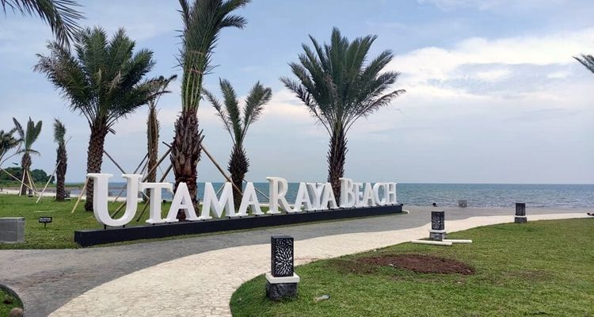

tourist spots
- tourist spots in my hometown -

Mount Bromo (Gunung Bromo)
Mount Bromo volcano is a scenic tourist destination in East Java. The volcano is noted for its spectacular sunrises, and majestic views across to Semeru.
BJBR
BJBR stands for Bee Jay Bakau Resort, is a popular tourist attraction in Probolinggo.

Utama Raya
Utama Raya Beach is a tourist attraction located in Probolinggo Regency, East Java. A hidden tourist spot in a gas station rest area SPBU.